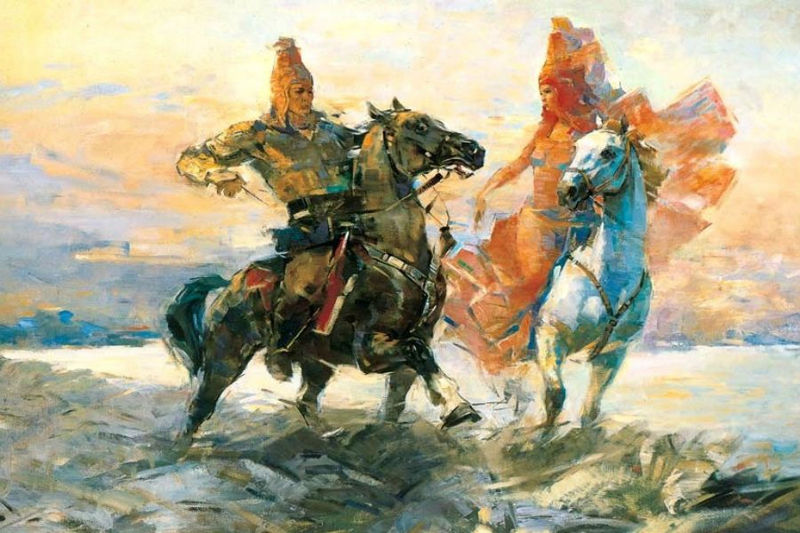

«Қозы Көрпеш – Баян сұлу» - XIII-XIV ғасырлардан бастап жырланып, қазақ арасына кең тараған. Жыр Сарыбай мен Қарабайдың аң аулай жүріп құда болып, Қозы мен Баянды күні бұрын атастырумен басталады. Әрі қарай қос ғашық Баян мен Қозы, зорлықшыл Қодар, қаражүрек Қарабай арасындағы оқиғалар негізінде зұлымдық пен махаббат күресі баяндалып, Қозы мен Баянның қайғылы өлімімен аяқталады. Жырдың негізгі идеясы – мөлдір махаббатты дәріптеу. Тілі көркем, сюжеті шебер құрылған. Оқиға оның дамуы, көркемдік шеберлігі, образдары жағынан – күрделі туынды. Бас кейіпкер Қозы Көрпеш – кіршіксіз махаббат иесі, батыр, адамгершіліші мол, адал жігіт. Қозы сияқты Баян да, адал ниетті, ақжарқын, ақылды ару ретінде бейнеленген. Жырда айтыс, тұрмыс-салт жырлары: естірту, жоқтау, атастыру, т.б. кеңінен қолданылады. Сыбанбай, Бекбау, Жанақ, Шөже, т.б. ақындар әр кезде жырды өздерінше жырлаған. Жырдың жалпы отыздан астам нұсқасы бар.

Жырдың қысқаша мазмұны
Жырдың қысқаша мазмұнына тоқтайтын болсақ, үстінде айтып кеткендей, жыр Сарыбай мен Қарабай атты екі байдан басталады. Қарабай сараң, жауыз, зұлым адам болса, Сарыбай ақ ниетті, ақкөңіл, жомарт адам болып келеді. Екеуінің де баласы жоқ, ұрпақсыз екен. Күндердің бір күнінде Қарабай мен Сарыбай Балталы, Балағалы деген елге көшеді. Бұл жұртта патша жоқ екен, халық өзара келісіп Сарыбайды хан сайлайды. Ал сараң Қарабай көптеген жылқысының біреуін де союға қимай, аң аулауға шығады. Сол күні таң намазын оқып, Сарыбай да аңға шығады. Аң іздеп, қалың тауды қақ жарып келе жатып, алдында бір жанды көреді. Бұл жан Қарабай болады.
Қарабай өзін 83 жасқа келгенше перзент көрмей, дүниеден үміт үзген жанмын деп таныстырады. Сарыбай өзінің де 75 жасқа келіп, әлі де баласы жоқ екенін айтып, Қарабайды жұбатады. Осыдан кейін екеуі дос болады.
Қарабай мен Сарыбай біреуінде қыз, біреуінде ұл туса екеуін қосып, дүниеге келмеген Баян мен Қозыны атастырады. Қарабай Сарыбайдан маралды өлтіруін өтінеді. Сарыбай досының көңілін қимай, маралды атып бермек болады. Ол маралды атқалы жатқанда, оның буаз екенін көреді. Сол кезде Сарыбай Қарабайға оның әйелінің аяғы ауыр екенін, маралды атпайтынын айтады. Қарабай оның маралды атуына өтініп, күнәсін өзі алатынын айтады. Сарыбай келісіп, аңды өлтіреді. Осы сәтте, өзі де құлап түседі. Қарабай өлгелі жатқан досыңа қарамай, маралдың қасына жетіп барып ішін жарады. Ішіндегі егіз қодықты бауыздап алады. Сол кезде ғана досының қасына келеді. Сарыбай өзін буаз аңның киесі ұрғанын, Алланың ақ бұйрығы жеткенін айтып, басын он жаққа қаратуын өтінеді және Қарабайдың әйелі қыз туса, құда болуы сұрайды. Қарабай келіседі. Сарыбай осы сөзді естісімен өледі. Қарабай еліне қайтады.
Жолда, бейтаныс адам Қарабайға сәлем беріп, Сарыбайдың әйелі ұл туғанын айтып, Сарыбайдың қайда екенін сұрайды. Қарабай шындықты жасырып, өтірік айтады.
Сол күні Қарабайдың әйелі де қыз туған екен. Сол елдегі сақау қатын Қарабайдың келісімен одан сүйінші сұрайды. Қарабай оны қамшымен сабап, қуып жібереді. Ол Сарыбайдың ұлы Қозы Көрпешті көргісі келеді. Қозы Көрпешті көрісімен, Қарабай оны ұнатпай, еліне қайтады. Сарыбайдың ханымы Тайлақ биге Қарабайдың келгенін, өзінің жаман түс көргенін айтады. Халық іздеп жүріп, өліп жатқан Сарыбайды тауып алады.
Сарыбайдың ханымы Тайлақ биді Қарабаймен құдалық сөйлесіп, келісуге жібермекші болады. Тайлақ би өзі бармай, өзінің ұлы Танаш пен 11 жігітті жібереді. Қарабай «жетім ұлға қызымды бермеймін» деп келіспейді. Бұны естіген ханым, бұл оқиғаны ешкімге, әсіресе Қозыға айтпасын дейді.
Қарабай осыдан кейін көшкісі келіп, бәйбішесіне «үйді жық,көшеміз» деп айтады. Бәйбішесі келіспегенде, Қарабай асырап алған екі қызын – Ай мен Таңсықты есіне түсіреді. Екеуі үйді жинап, жылай ел-жұртымен қоштасады. Қарабай Семей, Құлжа, Шыршық, Сыр бойына барып, ларды женсінбей, Сарыарқаға қайта келді. Бетпақтың шөліне тап болып, малы қырылуға айналған соң, Шуға қайта барды. Осы кезде «Арқадан сұлу қыз келді» дегенді естіген сол елдің батыры Қодар Қарабайды іздейді. Қарабайдың жайын білген Қодар, оның малын аман-есен Бетпақтан шөлдетпей алып шықса, не беретінін сұрайды. Қарабай қалыңмалсыз қыз беретінін айтады. Қодар асыранған қыздарын емес, туған қызы Баянды сұрайды. Қарабай келіседі.
Алып күштің иесі Қодар Қарабайдың малын аман-есен алып шығады. Қарабай Қодар ақылымен Аягөзге қоныс аударады, бұл кезде Баянның жасы 14-те екен.
Баян Қозыны көрмесе де, сырттай ғашық болып жүреді. Қодарды ұнатпайды. Қодардан басқа, Баянға тағы 90 байдың баласы ғашық болады. Тоқсан сері Баянды іздеп, Аягөзге келеді. Бұларды Қодар көріп, алдарынан шығады. Оларды жеңіп, тоқсан жігіттің бәрін Қарабайдың малын бағатын құлға айналдырады.
Енді Қозы туралы айтайық. Тайлақ бидің кенже баласы - батыр Айбас елінің намысы үшін Қозыға Баянды әпермек болады. Қарабайдың еліне келгенде, оны Ай, Тансық (Қарабайдың асыранды қыздары) және Баян қарсы алады. Айбаспен сөйлесіп, мән-жайды білген соң, Баян Қозыға деп алтын тон, жүзік және бір тоғыз сый беріп жібереді. Мұны көрген Қодар, Айбаспен күреседі. Айбас Қодарды жеңеді. Осы кезде Қодар тоқсан құлды шақырады. Тоқсан құлға әлі келмейтінін білген Айбас қашып кетеді. Тоқтамай шауып, өткен жерлеріне ат қойып отырады.
Айбас өз еліне келіп Қозы Көрпешті шақыртады. Ол Қозы Көрпешке Баянды әкелу керек екендігін айтады. Қозы осы кезде ғана Баян туралы біледі.
Қозы үйіне келіп, анасына Баянды алуға баратынын айтады. Анасы Қодар тірі тұрғанда Баянды бермейтінін, жаман түс көргенін айтып, Қозыны қалдырмақ болады. Қозы қанша қатер болса да баратынын, өз сөзінде қалатынын айтады. Осы сөздерден кейін анасы батасын береді. Қозы жолға шығады.
Жүре-жүре Қозы керуенге тап болады. Керуендегі ақсақал сиқырмен Қозыға тазша болуды үйретеді. Қозы Қарабайдың малын бағып жүрген тазшаға айналады.
Бірде Баян қой шетіне барса, Қозы киімін шешіп ұйықтап жатыр екен. Баян апаларына келіп көргенін айтады. Апалары оның Қозы Көрпеш екенін түсінеді. Осылайша, Қозы Көрпеш пен Баян сұлу бір-бірін көріп табысады. Күндердің бір күнінде бір қатын тазшаның Қозы екенін біліп, Қодарға айтып барады. Қодар Қозыны алдап, зұлымдықпен басын алады. Қайғырған Баян қулыққа көшеді. Ол Қодарға өзіне құдықтан су алып берсе, оған күйеуге шығатынын айтады. Қодар сеніп, Баянның шашынан ұстап, құдықтың түбіне қарай түседі. Айлакер Баян сол сәтте шашын қиып тастайды, Қодар құлап, қаза табады. Сөйтіп, Қозының кегі қайтарылады. Ал Баян болса, ғашығының күмбезіне келіп өзіне қанжар салып, өледі. (Шоқан-Жанақ нұсқасы)
Кейіпкерлер және олардың образдары
Жырда мына кейіпкерлерді кездестіруге болады: Баян, Қозы Көрпеш, Қарабай, Ай мен Тансық, Сарыбай, Қодар, Айбас және т.б. Олар туралы айта кетейік.
Баян – халықтың көркем өткен қиялынан бейне. Оның әрбір сөзінен ішкі дүниесі айқын көрініс береді. Баян - нәзіктік пен сұлулықтың ғана емес, ақниеттік пен адалдықтың да символы. Осы себепті оны жырдың бас кейіпкері деп тануға болады.
Қозы ел санасында кедей, жалшы, қойшы немесе жылқышы ретінде сақталған. Кейде жыр Қозыны «тазша» деп атайды. Жырдың кейбір нұсқаларында ол «ер Қозы» аталғанымен, оның батырлығынан жалшылығы үстем. Қозының осындай сипаттамалары оның халықтық бейнесін жасауға қызмет етіп тұр.
Жыр кейіпкерлерінің бірі – Қарабай. Аты көрсетіп тұрғандай, ол – шарт бұзушы, сөзінде тұрмайтын сараң кейіпкер. Байлық пен малды ғана ойлайтын Қарабай, Қозы Көрпеш пен Баянның бақытында кедергі болады. Негізінен, Қарабай сараңдықтың ғана емес, ақылсыздықтың да көрінісі. Жырдың көптеген нұсқаларында ол сараң, зұлым, опасыз, қаражүрек адам ретінде бейнеленеді. Бірақ, жырдың кейбір нұсқаларында ол зұлым емес, жағымды кейіпкер, Қозының әкесі ретінде көрсетіледі. Сондықтан, Қарабайды ұнамсыз кейіпкер ретінде ғана қабылдай алмаймыз.
Қозының әкесі – Сарыбай. Жырда ол ұнамды, ақниетті, адал, жақсы кейіпкер ретінде көрсетілген. Сарыбайды – Қарабайға қарама-қарсы тұлға, кейіпкер десек те болады. Бірақ, Қарабай сияқты ол да жырдың кейбір нұсқаларында ол сараң, қаражүрек кейіпкер ретінде бейнеленген. Оны Қозының емес, Баянның әкесі ретінде көрсететін жыр нұсқалары да бар.
Қодар. Жырдың кез келген нұсқасында ол Баян мен Қозының махаббатындағы кедергі болып тұрған кейіпкер. Қодар Қарабай ауылындағы басқа жігіттер сияқты Баянды жақсы көреді. Қодар – алып, күші көп батыр. Қарабайға қызмет істеу арқылы Баян сұлуға қол жеткізуді ойлайды. Ол Баянға ғашық болған жігіттерді оған таятпай, оларды ауылдың жауы санайтын. Қодар жырда зұлым, өзімшіл, опасыз, зорымшыл болып келеді. Жырдың бір нұсқаларында Қодар Қозыны өлтіреді немесе Баянның не Қозының қолынан өледі. Оны да ұнамсыз кейіпкерлерге жатқызсақ болады.
Жалпы, «Қозы Көрпеш – Баян сұлу» жырының образдары өмір шындығына жақын. Ондағы Сарыбай, Қозы мен Баян – ұнамды, Қарабай мен Қодар – жағымсыз кейіпкерлер.
Жырдың образдары мен оқиғасы нақты өмірден алынған. Ұнамды және ұнамсыз образдар бір-біріне әлеуметтік қайшылық негізінде қарсы қойылып, ескі мен жаңаның тартысын көрсетеді. Жырдың мазмұны мен образдарына қарай отырып, өткен заманның әлеуметтік қайшылықтарын танып білеміз.
Жырдың тартысы мен қайшылығы
«Қозы Көрпеш – Баян сұлу» жырының тарихи мазмұнына сай, оның қайшылықтары да бар. Жырға түрлі ырым-жырымдар мен наным-сенімдер мол енген. Дін әсері де жоқ емес. Сондай күрделі қайшылықтардың бірі – Қарабай мен Сарыбай арасындағы «құдалық» шарты. Бесікте жатқан екі сәбиді байлар өзара атастырып, Сарыбай өлген соң бұрынғы бата бұзылып, оқиғаның тартысы басталады. Осыдан кейін, Қарабай ақ батаны бұзушы, Қозы мен Баян сол ақ бата үшін күресуші болып суреттеледі. «Қозы Көрпеш» жыры көп заманнан бері келе жатқан сюжет болса да, онда XIX ғасырдың орта кезінде қазақ даласында туған саяси-экономикалық өзгерістердің де таңбасы бар. Соны кейінгі айтушылар құдалық, әмеңгерлік салттарының әсерімен жаңғырта жырлаған.